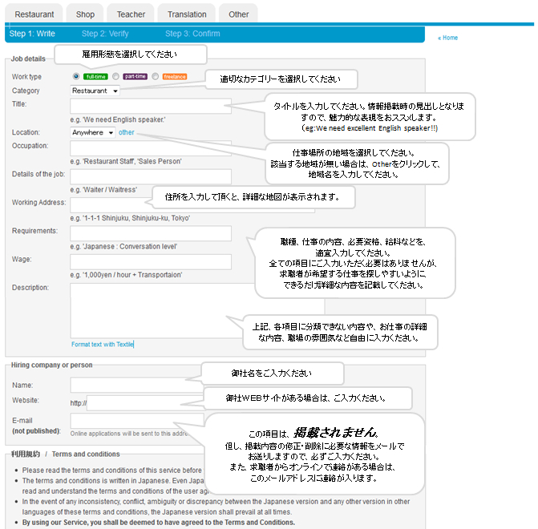
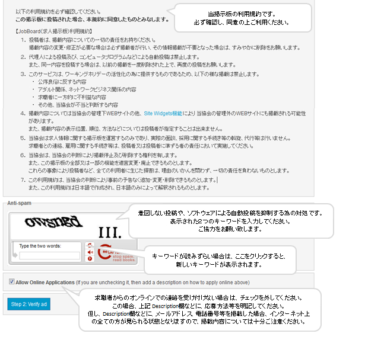
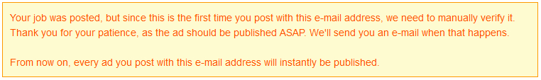

';
$header_obj->fncMenuHead_h1text = 'ワーキングホリデーで来日中の外国人及び、海外経験のある日本人の雇用について';
$header_obj->display_header();
?>
';
$header_obj->fncMenuHead_h1text = 'ワーキングホリデーで来日中の外国人及び、海外経験のある日本人の雇用について';
$header_obj->display_header();
?>
求人情報の掲載について
日本ワーキング・ホリデー協会では日本に来日する外国人ワーキングホリデーメイカ―のサポートも行っております。
日本語が分からないけど 日本で生活する外国人の通訳、住居紹介、日本語習得、日本独特の文化理解など個人個人、ワーキングホリデー参加国から来られた方をサポートします。
この一環として、来日中外国人の方への求人を随時募集しております。
今までこの手続きは指定の募集用紙にご記入の上、当協会にお送りいただき、協会オフィスにお越しいただいた方に閲覧いただく形で行っておりましたが、
この度、求人掲載・閲覧・応募までをインターネット上で行えるシステム（JobBoard）を導入いたしました。
来日中の外国人の方をお探しの場合は、求人情報を是非ご掲載いただけますようお願い申し上げます。
また、ワーキングホリデーや留学を通して海外経験を積まれた日本人の方向けの求人支援も行っております。日本国内で外国語を活かした仕事に就きたい方は是非ご活用ください。
外国語が話せる日本人スタッフを募集されたい企業様も大歓迎です。アルバイトだけではなく正規社員の募集も掲載して頂くことが可能です。
なお、求人情報掲載に際し、利用料金等は一切かかりません。
また、以下の利用規約を遵守願います。
【JobBoard（求人掲示板）利用規約】
| １． |
投稿者は、掲載内容についての一切の責任をお持ちください。 掲載内容の変更・修正が必要な場合は必ず掲載者が行い、その情報掲載が不要となった場合は、すみやかに削除をお願いします。 |
| ２． |
代理人による投稿及び、コンピュータプログラムなどによる自動投稿は禁止します。 また、同一内容を投稿する場合は、以前の掲載を一度削除された上で、再度の投稿をお願いします。 |
| ３． |
このサービスは、ワーキングホリデーの活性化の為に提供するものであるため、以下の様な掲載は禁止します。 ・ 公序良俗に反する内容 ・ アダルト関係、ネットワークビジネス関係の内容 ・ 求職者に一方的に不利益な内容 ・ その他、当協会が不当と判断する内容 |
| ４． |
掲載内容については当協会の管理下WEBサイトの他、Site Widgets機能により
当協会の管理外のWEBサイトにも掲載される可能性があります。 また、掲載内容の表示位置、順位、方法などについては投稿者が指定することは出来ません。 |
| ５． |
当協会は求人情報に関する掲示板を運営するのみであり、実際の面談、採用に関する手続き等の斡旋、代行等は行いません。 求職者との連絡、雇用に関する手続き等は、投稿者又は投稿者に準ずる者の責任において実施してください。 |
| ６． |
当協会は、当協会の判断により掲載停止及び削除する権利を有します。 また、この掲示板の全部又は一部の機能を適宜変更・廃止できるものとします。 これらの事象により投稿者など、全ての利用者に生じた損害は、理由のいかんを問わず、一切の責任を負わないものとします。 |
| ７． |
この利用規約は、当協会の判断により事前の予告なく追加・変更・削除できるものとします。 また、この利用規約は日本語で作成され、日本語のみによって解釈されるものとします。 |
来日中の外国人青年の雇用について
来日中の外国人の雇用に関しては、以下の点に注意する必要があります。
・ 求職者は日本国内において仕事をすることが可能で、有効な在留資格を持っていますか？(※１）
・ 仕事の内容・期間は、求職者の在留資格に沿ったものですか？（※２）
また、雇用した場合には、いくつかの手続きが必要となります。
詳しくは、お近くのハローワーク（公共職業安定所）にお問い合わせください。
| ※１ | 採用決定前に外国人登録証明等の書類の提示を求めることは、公正採用選考の観点から適切ではありません。 採用選考の段階では、外国人求人者が適法に就労できる在留資格を持っているかどうかの確認は、求職者本人に口頭で確認するようにしてください。 |
| ※２ |
ワーキングホリデー制度は各協定国双方の青少年に相手国の文化及び生活様式を理解することを目的とした制度であり、
その間の旅行資金を補うために付随的に働く事が認められています。 また、風俗営業又は風俗関連営業が営まれる営業所では働くことができません。 |
掲載手順について
当協会のJobBoard（求人掲示板）のご利用は無料です。
以下の手順で求人情報の投稿をお願いいたします。
|
JobBoardのWEBサイトを表示し、
右上の をクリックします。 |
|
|
|
次の通り、求人内容を入力します。 なお、ご入力頂いた内容は、求職者が直接閲覧しますので 「英語のみ」又は「英語・日本語での兼記」でお願いいたします。   |
|
|
ご入力頂きましたら、 をクリックしてください。確認画面が表示されます。 |
|
|
確認画面で、入力内容を確認して、 をクリックすると掲載が開始されます。 なお、初めて投稿頂いた場合は、次のようなメッセージが表示されます。（この状態では掲載されておりません。） 当協会で、掲載内容を確認させて頂きますので、しばらくお待ちください。 こちらでの確認作業の後（通常３～５営業日）に掲載を開始いたします。  |